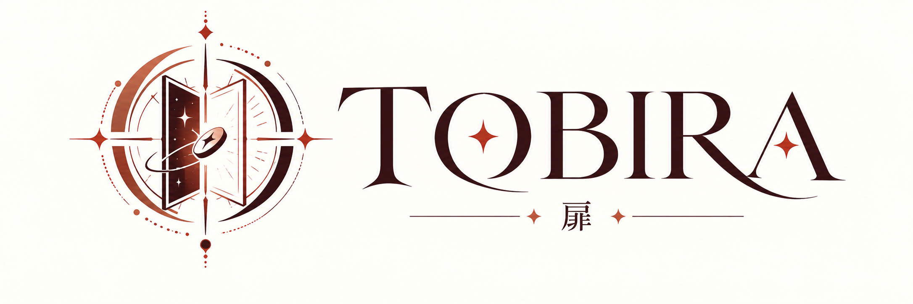

TOBIRA
공연에 올릴 물건을 정합니다. 시작 화면에는 물건이 없습니다.
프리셋 선택
선택한 프리셋 설정
TOBIRA 설치
홈 화면에 추가하면 전체 화면으로 빠르게 열 수 있습니다.
사용 안내
준비
공연 화면은 앱 이름 없는 평범한 홈 화면입니다. 로고와 설명, 버튼은 설정에만 있습니다. 물건을 올리기 전에는 화면에 아무것도 없습니다.
물건에서 동전, 플레잉 카드, 명함 중 하나를 고치고, 크기와 퇴장 느낌을 정한 뒤 「공연 시작」을 누릅니다.
정확한 위치에 두기
원하는 지점을 한 손가락으로 탭합니다. 고른 물건이 그 터치의 정중앙에, 평평한 그림으로 나타납니다.
밀어 없애기
물건을 끌어 위, 아래, 왼쪽, 오른쪽 어느 가장자리로든 화면 밖으로 보내면 사라집니다.
가장자리를 넘으면 정한 시간 동안 밖으로 밀리며 작아지고 흐려집니다. 그 사이 표면이 아주 약하게 어두워지고, 완전히 나간 순간 짧게 한 번 밝아졌다가 돌아옵니다.
설정으로 들어가기
공연 화면에는 설정 버튼이 없습니다. 두 손가락이 모두 닿은 뒤, 두 손가락을 함께 아래로 96픽셀 이상 움직이면 설정이 열립니다. 픽셀은 화면 좌표의 CSS 픽셀입니다.
다시 준비
두 손가락이 모두 닿은 뒤, 두 손가락을 함께 위로 96픽셀 이상 움직이면 물건을 치우고 다시 탭할 수 있게 준비합니다. 아래로 내리는 설정 동작과는 다릅니다.
리허설
연습 중에 키보드가 있으면 Shift+Escape로 설정에 들어올 수 있습니다. 관객 앞에서 쓰는 동작이 아닙니다.